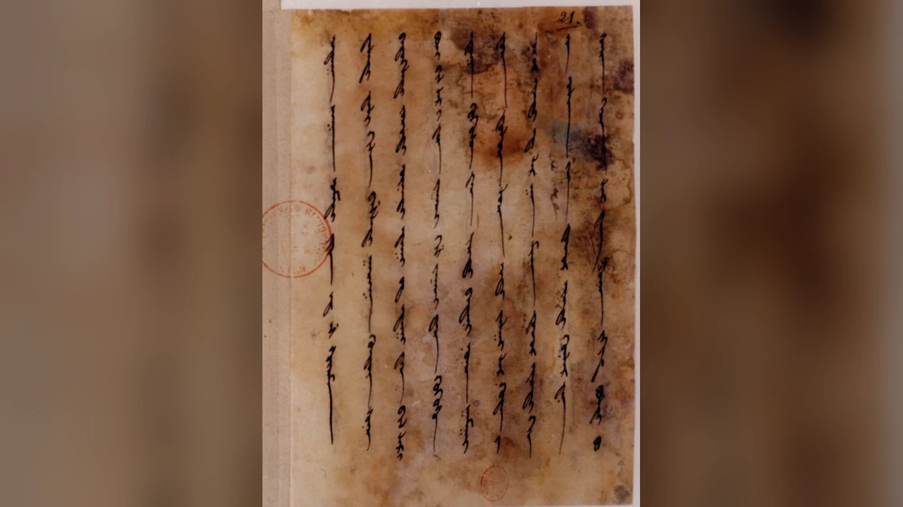
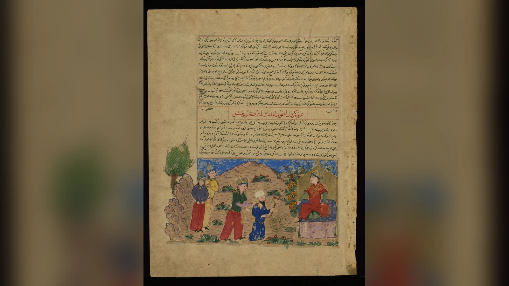
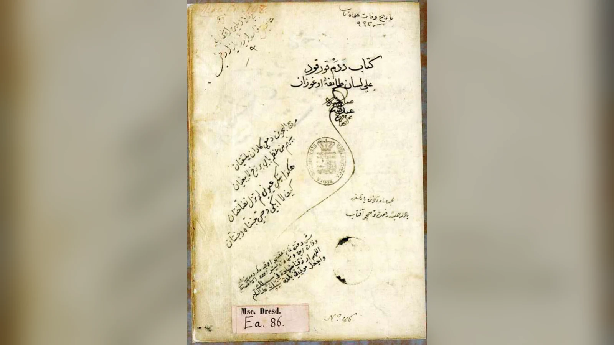

Oğuz’un ordusu ilerlemeye hazırdır; fakat yolun önüne bazen bir düşman, bazen aşılması güç bir ırmak çıkar. Gök tüylü kurt yön gösterir, bir bey ağaçlardan geçiş aracı yapar, bir başkası yükleri taşıyacak arabayı kurar. Destanın hükümdarı bu insanların yaptıklarını adlarına dönüştürür. Böylece sefer boyunca karşılaşılan güçlükler, sonradan Kıpçak, Karluk ve Kanglı diye anılacak toplulukların hikâyesine bağlanır.
Oğuz Kağan Destanı, Oğuz adlı efsanevi hükümdarın olağanüstü doğumunu, evliliklerini, seferlerini ve egemenliğini oğullarına bırakmasını anlatır. Türk destan geleneğinin bu kurucu kahramanı, altı oğluyla birlikte Oğuz boylarının ortak atası sayılır. Ancak bugün aynı başlık altında okunan anlatıların bütün ayrıntıları tek bir metinden gelmez. Uygur harfli Türkçe yazma ile Reşîdüddin ve Ebülgazi’nin aktardığı hikâyeler, Oğuz’un ailesini, inancını ve yolculuklarını farklı biçimlerde kurar.
Bu farklar destanın anlaşılmasını güçleştirmek zorunda değildir. Önce Uygur harfli anlatının olaylarını izlemek, ardından diğer metinlerde nelerin değiştiğini görmek yeterlidir. Hikâyenin başındaki çocuk, çevresindeki tehlikeyi ortadan kaldıran bir savaşçıya dönüşür; sonunda en önemli kararı, kazandığı ülkenin kendisinden sonra nasıl yönetileceğidir. Destanın kahramanlıkla soy düzenini buluşturan tarafı, bu uzun yolculukta belirginleşir.
Oğuz Kağan Destanı özeti: Doğumdan ülkenin paylaşılmasına
Uygur harfli metnin elde kalan başlangıcında Ay Kağan bir erkek çocuk dünyaya getirir. Çocuğun yüzü gök rengiyle, ağzı ateş kırmızısıyla betimlenir; saçları ve kaşları karadır. Annesinden ilk sütünü içtikten sonra başka yiyecekler ister, konuşmaya başlar. Kırk günün ardından büyümüş, yürüyüp oynar duruma gelmiştir. Ayaklarının öküze, belinin kurda, omuzlarının samura, göğsünün ayıya benzetilmesi, onun bedeninde farklı hayvanların gücünü bir araya getirir. Bu, bir insanın gerçek görünüşünü kaydetmekten çok, ileride üstleneceği olağanüstü rolü daha doğumunda duyuran bir tasvirdir.
Oğuz atlara biner, sürülerle ilgilenir ve ava çıkar. Yaşadığı çevrede ormanlar, ırmaklar ve çok sayıda hayvan vardır; fakat büyük bir yaratık insanlara ve sürülere zarar vermektedir. Türkçe aktarmalarda çoğunlukla gergedan denilen bu varlığın eski metindeki adı farklı okunmuştur. Hikâyedeki önemi, hangi hayvan türüne benzediğinden önce, topluluğun hayatını tehdit etmesidir. Oğuz onu avlamaya karar verince yayını, okunu, mızrağını, kılıcını ve kalkanını alır. Karşılaşmaya hazırlanışı, kaba kuvvetin yanında gözlem ve planlamaya da yer açar.
Önce bir geyiği ağaca bağlayıp bırakır; ertesi sabah yaratığın onu alıp götürdüğünü görür. Aynı denemeyi bir ayıyla tekrarlar. Sonunda ağacın dibinde kendisi bekler. Yaratık gelip başıyla kalkanına vurduğunda Oğuz mızrağını kullanarak onu öldürür. Daha sonra hayvanın iç organlarını yiyen bir yırtıcı kuşla karşılaşır ve onu da okla vurur. Anlatı böylece kahramanın farklı silahları kullanabildiğini gösterir. Oğuz’un ilk başarısı uzak bir ülkeyi ele geçirmek değil, yakınındaki insanların korktuğu tehlikeyi ortadan kaldırmaktır.
Ardından evlilik sahneleri gelir. Oğuz Tanrı’ya yakarırken çevresini karanlık kaplar ve gökten parlak bir ışık iner. Işığın içinde tek başına oturan bir kız vardır. Güzelliği gök, yıldız ve parlaklık imgeleriyle anlatılan bu kadınla evlenir; Gün, Ay ve Yıldız adlı üç oğulları doğar. Daha sonraki bir av sırasında ise göl ortasındaki bir ağacın kovuğunda başka bir kız bulur. Bu evlilikten Gök, Dağ ve Deniz dünyaya gelir. İki karşılaşma birbirinden farklı mekânlarda gerçekleşir; ilerideki iki ana soy kolu da bu iki doğum sahnesine bağlanacaktır.
Oğuz büyük bir şölen verir ve hükümdarlığını ilan eder. Kendisine bağlı insanların birlikte hareket etmesini ister; ardından dört bir yana haber göndererek başka hükümdarlardan da egemenliğini tanımalarını bekler. Bu çağrıya herkes aynı cevabı vermez. Altun Kağan hediyeler gönderip dostluğu kabul eder. Urum Kağan ise buyruğa boyun eğmez. Destanın savaşları bu ayrım üzerinden başlar: Oğuz’un etrafında kurulmak istenen düzen, hem anlaşmayla katılanları hem direnenleri içerir. Kahramanın sözü artık yalnız kendi obasına yönelik değildir.
Urum Kağan üzerine yürüyen ordu bir dağın eteklerinde konaklar. Sabah Oğuz’un çadırına güneşe benzer bir ışık girer; ışığın içinden gök tüylü, gök yeleli büyük bir erkek kurt çıkar. Kurt konuşarak seferde önden gideceğini söyler. Oğuz çadırını toplatır ve ordu onun peşinden ilerler. Kurt durduğunda askerler de durur. Böylece olağanüstü kılavuz, hikâyenin içinde gözle görülür bir görev üstlenir: Hareketin yönünü ve duraklarını belirler. Bu sahnede kurt, Oğuz’un annesi veya soyun biyolojik atası olarak anlatılmaz.
Urum Kağan’la yapılan savaşta Oğuz üstün gelir. Metin çatışmanın şiddetini ırmağın kızaran suyuyla, zaferin sonucunu ise ele geçen mallar ve sürülerle anlatır. Ardından Urum’un kardeşi Uruz Bey’in oğlunun koruduğu bir şehre yönelir. Genç yönetici savaşmayı seçmez; hediyeler göndererek babasının karşı çıkışının kendisini bağlamadığını bildirir ve Oğuz’un buyruğunu kabul eder. Şehri koruma göreviyle ilişkilendirilen bu kişiye Saklap adı verilir. Seferlerin içinde her yeni karşılaşmanın mutlaka bir meydan savaşına dönüşmediği böylece görülür.
Irmak aşmak gerektiğinde ordunun içinden Uluğ Ordu Bey bir çözüm bulur. Ağaçları kullanarak insanların suyu geçmesini sağlayan bir düzenek hazırlar. Yaygın aktarmalarda sal yapımı olarak anlatılan bu beceri karşılığında Kıpçak adını alır. Oğuz daha sonra çok sevdiği atını karlı bir dağda kaybeder. Askerlerinden biri dağa çıkıp hayvanı geri getirir; döndüğünde kar içindedir. Karluk adı bu olayla açıklanır. Birinde geçişi sağlayan ustalık, diğerinde zor koşullara dayanarak görevi tamamlamak öne çıkar.
Yol üzerinde altın ve gümüşle betimlenen, demir aksamı bulunan kapalı bir yapı görülür. Kapının açılmasını isteyen Oğuz, Tömürdü Kağul adlı becerikli kişiyi orada bırakır. Kalaç adı, bu sürümde kalıp kapıyı açma göreviyle ilişkilendirilir. Sonraki Çürçet seferinde ise kazanılan mallar taşınamayacak kadar çoktur. Barmaklığ Çosun Bilig bir araba yapar; yükler arabaya konur, hayvanlar önüne koşulur. Başkaları da onu örnek alır. Kanglı adının kökeni böylece taşıma sorununu çözen bu buluşla açıklanır. Bunlar destanın ad verme hikâyeleridir; kelimelerin gerçek dil tarihini tek başına kanıtlamaz.
Seferlerin coğrafyası ilerleyen satırlarda genişler. Sindu, Tangut ve Şam gibi adlar, Hindistan’dan Doğu Asya’ya ve Suriye’ye uzanan bir dünya tasavvurunu düşündürür. Metin bunların her biri için ayrıntılı güzergâh veya tarih vermez; bazı ülkeler birkaç satır içinde Oğuz’un egemenliğine katılır. Masar adlı hükümdarla mücadele de bu bölümde yer alır; adın Mısır’la ilişkisi araştırmalarda ele alınmıştır. Bütün bu yerleri tek bir gerçek seferin haritasına zorla yerleştirmek yerine, anlatının hükümdarın hâkimiyet alanını nasıl büyüttüğünü izlemek daha açıklayıcıdır.
Hikâyenin sonlarına doğru bilge danışman Uluğ Türük bir rüya görür. Altın yay doğudan batıya uzanır; üç gümüş ok kuzeye yönelir. Rüyasını Oğuz’a anlatır ve ülkenin soyuna verilmesi yönünde öğütte bulunur. Oğuz artık yaşlanmıştır. Oğullarını ava gönderirken Gün, Ay ve Yıldız’ı doğuya, Gök, Dağ ve Deniz’i batıya yollar. Rüyadaki okların yönü ile küçük oğulların avlandığı yön aynı değildir; kısa özetlerde sık karıştırılan ayrıntı budur. Büyük kardeşler bir altın yay, küçük kardeşler üç gümüş ok bulup getirir.
Oğuz yayı üç parçaya ayırarak büyük oğullarına verir; okları da küçük oğulları arasında paylaştırır. Sonra büyük bir toplantı ve şölen düzenlenir. Sağ tarafa dikilen direğin tepesinde altın tavuk, dibinde ak koyun; sol taraftakinin tepesinde gümüş tavuk, dibinde kara koyun bulunur. Bozoklar sağda, Üçoklar solda oturur. Kırk gün süren şölenin ardından Oğuz yaşadığı mücadeleleri hatırlatır ve yurdunu oğullarına bıraktığını söyler. Günümüze ulaşan hikâyede ağırlık kahramanın ölüm sahnesine değil, kurduğu egemenliğin sonraki kuşağa aktarılmasına verilmiştir.
Oğuz Kağan Destanı kahramanları ve anlatıdaki görevleri
Destanın kişileri, uzun ruh çözümlemeleriyle değil, yaptıkları işlerle tanınır. Birinin önemi nehri geçirmesinde, diğerinin kapıyı açmasında veya hükümdara öğüt vermesinde ortaya çıkar. Oğuz’un çevresindeki insanların bu kadar farklı becerilerle öne çıkması, anlatıyı tek savaşçının başarılarından daha geniş bir hikâyeye dönüştürür. Hükümdar savaşır, karar verir ve ödüllendirir; fakat her güçlüğün çözümünü kendisi bulmaz. İsimleri birlikte düşünmek, seferin nasıl sürdürülebildiğini de açıklar.
Oğuz, Ay Kağan ve iki eş
Oğuz Kağan hem savaşçı hem kurucu atadır. Başlangıçta bedeninin olağanüstülüğü ve avcılığı öne çıkar; büyüdükçe elçiler gönderen, bağlılık kabul eden, görev dağıtan bir hükümdara dönüşür. En belirgin yetkilerinden biri ad vermesidir. Başarılı bir iş yapan kişiyi adlandırdığında, o kişinin hikâyesini daha sonraki bir topluluğun geçmişine bağlar. Son bölümde oğullarına yer ve pay vermesi de aynı kurucu yetkinin aile içindeki karşılığıdır. Bu çizgi, destanın kahramanlığını yalnız savaş meydanıyla sınırlamaz.
Ay Kağan, Uygur harfli anlatıda Oğuz’u dünyaya getiren kişidir. Adındaki ay çağrışımı ve kahramanın sıra dışı doğumu, onun farklı mitolojik yorumlara konu olmasına yol açmıştır. Bununla birlikte metin ayrıntılı bir Ay Kağan biyografisi sunmaz. Oğuz’un ışık içinde ve ağaç kovuğunda karşılaştığı eşleri de kişisel adlarıyla tanıtılmaz. Onları adlandıran modern listeler, hangi kaynağa dayandıklarını göstermelidir. Buradaki iki eşin hikâyedeki belirleyici yeri, soyun iki ayrı kolunun başlangıcında bulunmalarıdır; bunu açıklamak için metinde olmayan hayat hikâyeleri eklemek gerekmez.
Uluğ Türük ve yol gösteren gök kurt
Uluğ Türük ak saçlı, ak sakallı, deneyimli bir danışman olarak görünür. Oğuz’un kuvvetle kazandığı egemenliğin geleceği, onun yorumladığı rüyayla düşünülmeye başlanır. Bu bakımdan danışmanın rolü yalnız geleceği haber vermek değildir; hükümdarı mirasın düzenlenmesine yöneltir. Bazı aktarmalarda adı Uluğ Türk veya Ulu Türk biçiminde yazılır. Adın farklı yazımları ayrı kişiler bulunduğunu göstermez. Seferlerin sonunda söz alan yaşlı danışman, anlatıda deneyimin de kılıç kadar etkili olabildiğini gösterir.
Gök kurt ise kararın yorumcusu değil, yolculuğun kılavuzudur. Konuşması, ışık içinden belirmesi ve ordunun hareketini yönlendirmesi onu olağanüstü bir varlık yapar. Oğuz’un rüyasında gördüğü bir hayal olarak değil, olay örgüsüne katılan bir figür olarak anlatılır. Onu otomatik olarak Asena adıyla tanıtmak doğru değildir; bu metin o adı vermez. Türk köken anlatılarındaki kurtların hepsi aynı görevi üstlenmez. Ergenekon ve Bozkurt anlatıları arasındaki ayrım, bu farklı işlevleri karşılaştırmak için anlamlı bir devam okumasıdır.
Seferin yardımcıları ve karşılaşılan hükümdarlar
Uluğ Ordu Bey’in nehir geçişi için bulduğu çözüm, ordunun hareketini sürdürür; Barmaklığ Çosun Bilig’in arabası ise zaferden sonra ortaya çıkan taşıma sorununu giderir. Tömürdü Kağul’un işi, ordunun bekleyemediği yerde kalarak kapıyı açmaktır. Karluk adını alan kişinin başarısı da kayıp atı karlı dağdan geri getirmesidir. Bu kişilerin tek bir “yardımcı kahraman” başlığı altında adsız bırakılması, destanın beceriye verdiği yeri görünmez kılar. Görevleri farklıdır; ortak yönleri, Oğuz’un seferini mümkün kılan pratik işleri üstlenmeleridir.
Altun Kağan, Urum Kağan ve Uruz Bey’in oğlu ise farklı siyasi tutumları temsil eder. Altun Kağan bağlılığı hediyelerle bildirir; Urum Kağan karşı çıkar ve savaşır; Uruz’un oğlu, babasının tavrını sürdürmek yerine Oğuz’la anlaşır. Çürçet Kağan da savaşla karşılık veren hükümdarlardandır. Destan bu kişileri Oğuz’un bakış açısından tanıtır; kendi iç dünyalarını uzun uzun anlatmaz. Yine de farklı cevapları, egemenliğin yalnız düşmanı yok etmekle değil, dostluk, bağlılık ve görev ilişkileriyle kurulduğunu görmeye yeter.
Oğuz Kağan’ın altı oğlu: Gün, Ay, Yıldız, Gök, Dağ ve Deniz
Altı oğlun adları, Oğuz Kağan Destanı’nın en çok hatırlanan ayrıntılarındandır. Gün, Ay ve Yıldız birinci evlilikten; Gök, Dağ ve Deniz ikinci evlilikten doğar. Adların sırası, daha sonra anlatılan doğu ve batı yolculuklarıyla birlikte önem kazanır. Büyük oğulların doğuya, küçük oğulların batıya gönderilmesi, buldukları nesnelerin farklı oluşuyla tamamlanır. Bu düzeni yalnızca aile içi bir miras paylaşımı saymak eksik kalır; destan aynı anda siyasi hiyerarşinin kökenini de açıklamaya çalışır.
Bozok ve Üçok adları, altı oğlun çevresinde kurulan iki ana kola işaret eder. Sonraki Oğuzname ve soy anlatılarında bu kolların her biri on iki boyla ilişkilendirilerek yirmi dört Oğuz boyu düzeni geliştirilir. Ancak Uygur harfli kısa anlatı ile daha geç şecere metinlerinin ayrıntı düzeyi aynı değildir. Bir okuyucu altı oğlun hikâyesini bu metinde bulurken, bütün boyların damgalarını, ongunlarını ve sıralamasını daha geniş soy geleneğinde karşılar. Bu farkı belirtmek, bilgiyi eksiltmez; tersine hangi kaynağın hangi soruyu yanıtladığını netleştirir.
Boyların sayısı ve adlarının yazımı da bütün eserlerde tek biçimde sabit kalmaz. Kaşgarlı Mahmud’un aktardığı Oğuz boylarıyla Reşîdüddin ve Ebülgazi geleneğindeki soy şemaları arasında ayrıntı farklılıkları vardır. Kimi listelerde adların biçimi değişir; kimi anlatılar boyun konumunu, damgasını veya atasını öne çıkarır. Bu nedenle popüler bir tabloda görülen yirmi dört adı hiçbir açıklama yapmadan bütün çağların değişmez resmi listesi olarak sunmak yanıltıcıdır. Önemli olan, boyların ortak bir ataya bağlanması yoluyla toplumsal ilişkilerin nasıl düzenlendiğini görmektir.
Şölen sahnesi, soy düzeninin sözlü bir açıklamadan fazlası olduğunu düşündürür. Oğulların sağ ve sol tarafta oturması, kendilerine ayrılan nesneler ve hükümdarın paylaşım konuşması, toplumun siyasi hiyerarşisini herkesin görebileceği bir biçimde kurar. Eski Türk ve bozkır siyaset kültürlerinde oturma sırası, pay ve görev dağılımı önem taşıyabilir; fakat destandaki belirli töreni tarihsel olarak gerçekleşmiş tek bir kurultayın kaydı sayamayız. Edebî sahne, siyasi düzenin niçin meşru görüldüğünü açıklayan bir model sunar.
Bu iki kolun çocukları, Reşîdüddin geleneğindeki ayrıntılı soy düzeninde yirmi dört boyun ataları olarak gösterilir. Gün Han’ın kolunda Kayı, Bayat, Alka Evli ve Kara Evli; Ay Han’ın kolunda Yazır, Döğer, Dodurga ve Yaparlı; Yıldız Han’ın kolunda Avşar, Kızık, Beğdili ve Karkın yer alır. Bunlar Bozok kolunu oluşturur. Gök Han’a Bayındır, Peçenek, Çavuldur ve Çepni; Dağ Han’a Salur, Eymür, Alayuntlu ve Yüreğir; Deniz Han’a ise İğdir, Büğdüz, Yıva ve Kınık bağlanır. Bu ikinci küme Üçok koludur. Adlar burada yaygın Türkiye Türkçesi biçimleriyle verilmiştir; eski nüshalarda yazımları değişebilir.
Bu şemanın amacı, yirmi dört ayrı geçmişi ortak bir aile düzenine yerleştirmektir. Reşîdüddin’in aktarımında Oğuz’dan sonraki düzenlemelerde Gün Han’ın danışmanı Irkıl Hoca da rol alır. Boyların işaretleri ve payları belirlenerek aralarında çıkabilecek anlaşmazlıkların önlenmesi amaçlanır. Damga, boyu ayırt eden işaret; ongun, soy geleneğinde belirli bir boy veya grupla ilişkilendirilen hayvan; ülüş ise pay anlamına gelir. Bunlar aynı şeyi anlatan kelimeler değildir. Soy bağına eklenen işaret, konum ve pay, birlikte bir toplumsal düzen tarif eder.
Özellikle Kayı, Avşar, Bayındır veya Kınık gibi sonraki tarihte tanınan adlarla karşılaşmak, bu çizelgeyi arşivden çıkarılmış kesintisiz bir aile ağacı sanmaya yol açabilir. Oysa çizelge, anlatının topluluklar arasında kurduğu akrabalık modelidir. Onun tarihsel önemi, her kişinin doğumunu belgelemekten çok, farklı boyların kendilerini hangi ortak ata etrafında düşündüğünü göstermesindedir. Bir boy adının sonraki siyasi tarihte yaşaması ile efsanevi atanın bireysel yaşamının doğrulanması ayrı sorulardır.
Uygur harfli yazma: Destanın hangi metnini okuyoruz?
Oğuz Kağan Destanı’nın bugün en çok bilinen anlatısı, Paris’te Bibliothèque nationale de France koleksiyonunda Supplément turc 1001 numarasıyla korunan Uygur harfli yazmaya dayanır. Yazma yirmi bir yapraktır ve eksiktir. Buradaki “Uygur harfli” ifadesi, metnin yazıldığı alfabeyi belirtir; eserin doğrudan belirli bir Uygur hükümdarı tarafından yazdırıldığını veya tek başına Uygur devletinin kuruluş destanı olduğunu kanıtlamaz. Alfabe, dil, metnin düzenlenme dönemi ve bugün elimizde bulunan fiziksel kopyanın tarihi farklı sorulardır.
Bibliothèque nationale de France katalog kaydında mevcut fiziksel nüshanın tarihi için on sekizinci yüzyıl olasılığı yer alırken anlatının redaksiyonunun Moğol dönemiyle, yaklaşık on üçüncü veya on dördüncü yüzyılla ilişkilendirildiği görülür. Akademik literatürde farklı tarihlendirmeler de vardır. Bu tabloyu tek bir kesin tarihe indirgemek, yazmanın kopyalanmasıyla destanın biçimlenmesini karıştırmak olur. Daha eski sözlü motiflerin bulunması da günümüze kalan kâğıdın aynı çağdan geldiği anlamına gelmez.
Yazmanın eksik oluşu, elde kalan hikâyenin sınırlarını belirler. Metni bugün kesintisiz bir kitap gibi okutan modern baskılar, çeviri ve düzenleme kararlarıyla okuyucuya yardımcı olur. Fakat bu yardımcı düzenlemeler, eldeki tarihî nesnenin bütünlüğünü değiştirmez. Eserin bazı satırları farklı okunabilir; eski kelimelerin günümüz Türkçesindeki karşılıkları üzerinde tartışma bulunabilir. Tehlikeli hayvanın adı veya kimi özel adların yazılışı, bu nedenle kaynaklar arasında değişir. Bu yüzden hayvan için kullanılan “gergedan” karşılığı bile çevirmenin verdiği bir karardır.
Willy Bang ile Reşit Rahmeti Arat’ın yayımladıkları metin ve çeviri, Oğuz Kağan araştırmalarında önemli bir dönüm noktasıdır. Daha sonra yapılan dil incelemeleri, okuma önerileri ve yeni tıpkıbasımlar metni yeniden değerlendirmeye imkân vermiştir. Ferruh Ağca’nın 2016 tarihli Uygur harfli Oğuz Kağan Destanı çalışması da metin, aktarma, notlar, dizin ve tıpkıbasım içeren akademik bir yayındır. Bu eserlerin varlığı, destanın bugün tek bir popüler özetten değil, eleştirel okuma geleneğinden öğrenilebildiğini gösterir.
Yazmanın ilk sayfasında bir hayvan çizimi de bulunur. Eksik başlangıcın ardından gelen bu resim, metnin yalnız harflerden oluşan bir aktarım olmadığını hatırlatır. Pelliot, 1930 tarihli incelemesinde çizimi ve öncesi kayıp cümleyi birlikte ele alır; ancak eksik satırları kesin biçimde yeniden kurmaz. Bir yaprağın yıpranması veya kaybolması, bazen yalnız birkaç kelimeyi değil, bir figürün neden orada bulunduğunu anlamamızı sağlayacak bağlamı da ortadan kaldırır. Yazmanın kendisini görmek, modern özetlerde hissedilmeyen bu maddi sınırı görünür kılar.

Reşîdüddin ve Ebülgazi: İslami Oğuzname geleneği nasıl değişti?
On dördüncü yüzyıl başlarında İlhanlı tarihçisi Reşîdüddin, Câmiʿu’t-tevârîh adlı geniş tarih derlemesinde Oğuz ve Türk topluluklarının geçmişine ilişkin anlatılara yer verdi. Burada Oğuz’un soyu, peygamberler tarihiyle ilişkilendirilen İslami bir çerçeve içinde kurulur. Nuh’un oğlu Yâfes üzerinden ilerleyen soy anlatısı, Uygur harfli metindeki ışık ve ağaç sahneleriyle aynı kuruluş biçimi değildir. Bu farkı “biri doğru, diğeri yanlış” diyerek kapatmak yerine iki anlatının farklı toplumsal ihtiyaçlara cevap verdiğini görmek daha anlamlıdır.
Reşîdüddin’in anlatısında Oğuz’un babası Kara Han’dır. Oğuz daha çocukken tek Tanrı’ya inanır; annesini de bu inanca yöneltir. Büyüdüğünde evlilikleri ve aile ilişkileri inanç ayrılığı çevresinde düzenlenir. Babasıyla mücadelesi, yalnız tahtı elde etme meselesi olmaktan çıkar ve dinî bir çatışmaya dönüşür. Uygur harfli metindeki ışık içinde beliren eşle ağaç kovuğundaki eşin yerine burada akrabalık ve inanç tercihlerinin belirlediği evlilikler bulunur. Bu nedenle Kara Han’la çatışmayı alıp Uygur harfli özetin başlangıcına eklemek, iki ayrı anlatıyı birleştirir.
Ebülgazi Bahadır Han’ın on yedinci yüzyılda kaleme aldığı Şecere-i Terâkime, Oğuz ve Türkmen soy anlatılarını daha geç bir dönemin bakışıyla derler. Yazarın önceki yazılı eserlerden, özellikle Reşîdüddin geleneğinden ve Türkmenler arasında yaşayan rivayetlerden yararlandığı akademik araştırmalarda belirtilir. Bu nedenle Ebülgazi’de Reşîdüddin’e benzeyen bir ayrıntının bulunması, otomatik olarak iki bağımsız eski tanıklık elde ettiğimiz anlamına gelmez. Metinler arasındaki aktarım ilişkisini görmek, gelenekte hangi ayrıntıların korunduğunu ve hangilerinin yeniden düzenlendiğini anlamaya yardımcı olur.
Şecere-i Terâkime ile Şecere-i Türk aynı eser değildir. Birincisi Türkmen soyları ve Oğuzname geleneği açısından doğrudan önem taşır; ikincisi daha geniş bir Türk ve hanedan tarihi çerçevesine sahiptir. İki eserin adlarını birbirinin yerine kullanmak, kaynakçayı ve anlatı karşılaştırmasını karıştırır. Ebülgazi’nin tarihçi ve hükümdar kimliği de metinlerini etkiler: soy anlatıları, geçmişi hatırlatırken topluluklar arasındaki hiyerarşiyi ve siyasi meşruiyeti açıklamak için kullanılabilir. Bunları çağdaş anlamda tarafsız nüfus kayıtları gibi değerlendiremeyiz.
İslami Oğuzname geleneği, önceki anlatıların bütünüyle silinmesi anlamına gelmez. Soy kurma, ülke paylaşma, topluluklara ad verme ve hükümdarlığı açıklama gibi işlevler sürerken dinî dil ve tarih anlayışı değişebilir. Bu süreklilik ile dönüşümün bir arada bulunması, destanın niçin uzun yüzyıllar boyunca yeniden anlatıldığını açıklayan temel özelliklerden biridir. Bir metni “bozulmuş kopya” diye değersizleştirmek yerine kendi döneminde hangi sorulara cevap verdiğini araştırmak, Oğuz Kağan figürünün kültürel hayatını daha iyi anlamamızı sağlar.
Aynı boy adı, farklı bir hikâye
Kıpçak adının açıklanışı, anlatıların nasıl değiştiğini gösteren belirgin bir örnektir. Uygur harfli hikâyede adı alan kişi, ordunun ırmağı aşmasını sağlayan Uluğ Ordu Bey’dir. Reşîdüddin’in aktardığı köken rivayetinde ise savaş sırasında kocası öldürülen hamile bir kadın, içi oyuk bir ağaca sığınır. Doğum ve ağaç kovuğu çevresinde kurulan hikâye, Kıpçak topluluğunun başlangıcına bağlanır. Ebülgazi de adla içi boş ağaç arasında ilişki kurar. Pelliot bu rivayetleri karşılaştırırken, Uygur harfli nüshada Kıpçak adının verildiği bölümün kelimeyi aynı açıklıkla çözümlemediğine dikkat çeker. Aynı adın etrafında bir yerde kurtuluş ve doğum, başka bir yerde ustalık ve hükümdarın ödülü vardır.
Kalaç adında ise hikâyenin değişmesine küçük bir sözcük farkı eşlik eder. Uygur harfli anlatının kapalı yapı sahnesinde verilen görev, orada kalıp kapıyı açmaktır. Pelliot’nun karşılaştırdığı Reşîdüddin ve Ebülgazi geleneğinde ad, kalmak ve açlık çevresinde açıklanır. Türkçedeki “aç” fiiliyle “aç” sıfatı aynı sesleri taşısa da farklı anlamlar verir; anlatılar bu benzerlikten başka olaylar çıkarır. Böylece adın akılda kalmasını sağlayan kısa söz, bir sürümde yapılacak işe, diğerinde kişinin içinde bulunduğu duruma bağlanabilir. Modern bir özette yalnız boy adlarını korumak, bu küçük fakat anlamlı anlatım farkını görünmez kılar.
Bu örneklerde adlandırma, topluluğun geçmişini hatırlamanın bir yoludur. Kişi bir olay yaşar ve hükümdardan ad alır; o olayın hatırası, kendisinden sonra gelenlerin ortak kimliğine eklenir. Hikâyeyi dinleyenler için bir boy adı artık yalnız yabancı bir topluluğu gösteren sözcük olmaktan çıkar, anlatılabilir bir başlangıç kazanır. Ortak hükümdarın farklı kişilere ad vermesi de aralarında bağ kurar. Hepsi aynı aileye aynı biçimde bağlanmasa bile Oğuz’un seferinde yer edinmiştir. Bu yüzden Kıpçak, Karluk veya Kanglı adlarının destanda bulunmasını, onların yirmi dört Oğuz boyu çizelgesine otomatik olarak dâhil edildiği şeklinde okumamak gerekir. Seferdeki adlandırmalarla altı oğuldan türetilen soy şeması, ortak bir geçmiş kurmanın farklı yollarıdır.
Rehberler ve resimlenen seferler
Seferlerdeki yol göstericiler de değişebilir. Reşîdüddin geleneğinde yaşlı ve deneyimli Yuşi Hoca’nın öğütleri, karanlıklar diyarı gibi olağanüstü yerlerde önem kazanır. Uygur harfli anlatıdaki gök kurdun yerine her ayrıntıda aynı karakterin geçtiğini söylemek mümkün olmasa da rehberliğin farklı biçimlerde kurulduğu açıktır. Oğuz’un bu yolculuğunu gösteren Topkapı minyatürü, makalenin kapağındaki sahnedir. Dolayısıyla resim, özetin başında izlenen Uygur harfli nüshadaki kurt sahnesinin tasviri olarak okunmamalıdır.
Oğuz hikâyeleri sonraki tarih derlemelerinde resimlerle de aktarılmıştır. Hâfız-ı Ebrû’nun yaklaşık 1425’te hazırlanmış tarih kitabından Walters Art Museum’da bulunan bir yaprakta Oğuz, Şam’dan yaylar getiren elçiyi kabul eder. Minyatür, kahramanı taht çevresindeki maiyeti ve hediyelerle birlikte gösterir. Buradaki yaylar, Uluğ Türük’ün rüyasındaki altın yayın resmedilmiş hâli değildir; başka bir sahnenin parçalarıdır. Aynı kahramana ait iki yay anlatısını ayırmak, metin kadar görselin de kendi bağlamında okunmasını sağlar.

Oğuz Kağan gerçekten yaşadı mı, Mete Han ile aynı kişi mi?
Oğuz Kağan’ın tarihsel bir hükümdar olarak yaşadığını kesin biçimde gösteren, destandaki bütün olayları doğrulayan bağımsız bir belge bulunmamaktadır. Bu, Oğuz adının veya Oğuz topluluklarının tarihte bulunmadığı anlamına gelmez. Oğuzlar tarihsel kaynaklarda izlenebilen geniş bir Türk toplulukları çevresidir; destanın kurucu hükümdarı ise bu çevrenin geçmişini açıklayan efsanevi bir figürdür. Tarihsel toplulukla onun hakkında anlatılan destanı birbirine karıştırmak, hem tarihin hem edebiyatın ne söylediğini bulanıklaştırır.
Oğuz Kağan’ın Mete Han olduğu görüşü, özellikle modern tarih ve kültür yazınında sık karşılaşılan bir eşleştirmedir. Çin kaynaklarında Modu Chanyu adıyla bilinen ve Türkçede Mete Han diye anılan Xiongnu hükümdarının büyük seferleri, geniş egemenlik alanı ve kurucu lider imgesi, destandaki Oğuz ile benzerlik kurulmasına yol açmıştır. Ancak benzerlik, iki adın aynı kişiyi gösterdiğini kanıtlayan bir çağdaş kayıt değildir. Ayrıca Xiongnu dünyasının dil ve kimlik yapısı üzerine bilimsel tartışmalar vardır. Bu nedenle “Oğuz Kağan kesinlikle Mete Han’dır” cümlesi, eldeki kanıtların izin verdiğinden daha ileri gider.
Bir destanın çok eski olaylardan esinlenmiş olması mümkündür; ancak esinlenme ihtimaliyle doğrulanmış biyografi farklı şeylerdir. Oğuz’un hangi tarihte doğduğu, kaç yıl yaşadığı veya hangi savaşları hangi takvim yılında kazandığı konusunda kesin bir kronoloji kuramayız. Uygur harfli anlatıda geçen coğrafi adlar ve seferler de tek başlarına tarihsel tarihlendirme sağlamaz. Destanın değerini ölçmek için onu bir hükümdarın eksiksiz özgeçmişine dönüştürmek gerekmez. Asıl tarihsel soru, bu anlatının farklı toplumlarda neden anlamlı bulunduğudur.
Mete Han’la karşılaştırmalarda baba ile oğul arasındaki mücadele de öne çıkar. Ancak bu motif, yukarıda görüldüğü gibi Oğuz anlatılarının hepsinde aynı biçimde bulunmaz. Üstelik bir oğlun eski hükümdarla çatışarak iktidara gelmesi, tek bir kişiye özgü olay örgüsü değildir. Özdeşlik kurmak için benzer sahnelerin yanında zaman, aktarım ve bağımsız tanıklık bağlantıları gerekir. Bu yüzden Oğuz’u anlatırken kesin doğum tarihi, saltanat süresi veya mezar yeri vermek; kaynakta bulunmayan bir biyografiyi tamamlamak anlamına gelir.
Bozkurt, ışık, ağaç, yay ve ok: Destanın sembolleri ne anlatıyor?
Destandaki ışık sahnesi, Oğuz’un ilk eşini bulduğu olağanüstü karşılaşmayı anlatır. Göksel bir kaynaktan gelen ışığın içinde kadın figürünün görünmesi, kahramanın soyunun sıradan evlilik kayıtlarının ötesinde bir anlamla kurulduğunu düşündürür. Bununla birlikte ışığı tek bir dinî öğretinin kesin işareti olarak tanımlamak güçtür. Metnin farklı çağlarda aktarılmış olması ve başka Türk anlatılarında da göksel köken motiflerinin bulunması, karşılaştırma yapmayı mümkün kılar; fakat benzerlik her zaman aynı anlamı taşıyan tek bir ritüelin varlığını göstermez.
Ağaç sahnesi de ikinci evliliğin başlangıcıdır. Oğuz’un bir ağacın kovuğunda bulduğu kadınla birleşmesinden Gök, Dağ ve Deniz doğar. Bu sahne, doğa ve soy arasındaki yakınlığı yorumlamaya elverişlidir. Bazı araştırmacılar ağaç motifini geniş Avrasya geleneklerindeki kutsal ağaç düşünceleriyle karşılaştırır. Ancak anlatının kendi sözcüklerini bırakıp “bu kesinlikle evrensel hayat ağacıdır” demek, metne dışarıdan hazır bir açıklama yükler. Burada güvenle söylenebilen şey, soyun kuruluşunun ağaçla ilişkili olağanüstü bir karşılaşma üzerinden anlatılmasıdır.
Yay ve okların paylaşımında ise anlam, nesnelerin birlikte nasıl çalıştığından doğar. Yay oku yönlendirir, ok yayın hareketini uzağa taşır. Büyük ve küçük oğullara farklı nesneler verilmesi bu nedenle eşit altı hediyenin dağıtılması değildir. Anlatı, iki kol arasında ilişki kurarken aralarındaki konum farkını da korur. Son şölende sağ ve sol tarafların ayrılması, bu farkı herkesin görebileceği bir düzene dönüştürür. Yorumun dayanağı, nesnelerin tek başına rengi veya maddesi kadar, kime ve hangi sırayla verildiğidir.
Şölenin altın ve gümüş kuşları, ak ve kara koyunları da aynı düzenin parçalarıdır. Bu karşıtlıkları doğrudan “iyi” ve “kötü” diye çevirmek, aynı topluluğun iki kolunu ahlaki düşmanlara dönüştürür. Metinde iki taraf da hükümdarın oğullarına aittir. Renkler ve değerli madenler ayrımı görünür kılar; fakat her birinin bütün eski Türk topluluklarında değişmez tek anlam taşıdığını varsayamayız. Sahnenin açıkça gösterdiği, paylaşımın sözlü bir karar olarak kalmayıp mekân ve nesnelerle sergilenmesidir.
Şükrü Olcay’ın eşya simgeciliği üzerine çalışması, silahlardan taşıtlara ve törensel nesnelere geçişi kahramanın ve topluluğun gelişimiyle birlikte yorumlar. Bu yaklaşım, destanda eşyaların rastgele dekor olmadığını fark etmeyi sağlar. Yine de sembolik açıklama, metnin yerine geçmemelidir: Araba öncelikle yük taşır, sal ırmağı geçirtir, yay ile ok ise paylaşım sırasında farklı kollara verilir. Nesnelerin bu somut işlerini korumak, yorumun hikâyeyle bağını sürdürür.
Işık, yakarış ve göksel rehberlik motifleri eski inanç dünyasıyla karşılaştırılabilir. Bununla birlikte bir destan, bütün bir dinin kurallarını sıralayan metin değildir. Anlatıdaki kutsal yardımın hükümdarlıkla bağını daha geniş bağlamda anlamak için Tengri ve Gök Tanrı inancı ayrı bir çerçeve sunar. Burada önemli olan, Oğuz’un başarısının yalnız beden gücüyle anlatılmamasıdır. Seferi destekleyen olağanüstü işaretler ve paylaşımı hazırlayan rüya, hükümdarın kararlarını anlatının kutsallık düşüncesine bağlar.
Destanın dili ve anlatım özellikleri
Oğuz Kağan anlatısında olaylar hızlı ilerler. Bir evlilikten çocukların doğumuna, bir ülkeden başka bir sefere kısa geçişlerle ulaşılır. Anlatıcı kahramanın her gününü kaydetmez; onun kurucu kimliğini gösteren karşılaşmaları seçer. Olağanüstü büyüme de bu hızın bir parçasıdır. Çocukluğun ayrıntıları yerine çok kısa zamanda at binen ve avlanan bir kahraman ortaya çıkar. Aynı anlatım tercihi, yıllarca sürmesi beklenen seferleri birkaç önemli durakta toplar. Böylece hikâyenin zamanı gündelik hayatın zamanından ayrılır.
Tekrarlanan sözler, karşılaşmalar ve ad verme sahneleri metnin hatırlanmasını kolaylaştırır. Oğuz bir beceriyi görür, hoşnut olur ve kişiye ad verir; bu düzen birkaç kez farklı olaylarla yinelenir. Ancak her tekrarın içinde yeni bir engel vardır: su, kar, kapalı bir kapı veya taşınamayan yük. Ortak kalıp, farklı toplulukları aynı hükümdarın hikâyesine yerleştiren bir bağ oluşturur. Bugünkü bir makalede gereksiz tekrar sayılabilecek özellik, destanın kuruluşunda olayları birbirine bağlayan anlatım aracıdır.
Metin bütünüyle uzun bir şiir hâlinde değildir. Düzyazıyla ilerleyen anlatının içinde hükümdarın seslendiği ritimli, şiirsel parçalar bulunur. Pelliot özellikle şölenlerle bağlantılı konuşmalardaki koşut yapıya dikkat çeker. Oğuz’un sözü, olayları anlatan dış sesin arasından belirginleşir; hükümdarlığın ilanı ve yurdun devri gibi dönüm noktalarında işitilir. Bu geçişler, destanın yalnız hangi olayları aktardığını değil, otoriteyi hangi sesle duyurduğunu da gösterir. Günümüz Türkçesine aktarılırken ritim ve sözcük seçiminin değişebilmesi, farklı baskıların neden aynı cümlelerle ilerlemediğini açıklar.
Anonim olması, metnin tarihsiz veya kendiliğinden oluşmuş olduğu anlamına gelmez. Elimizdeki anlatıyı düzenleyen, kopyalayan ve sonraki kuşaklara ulaştıran insanlar vardır; fakat onları modern bir romanın kapaktaki yazarı gibi tek bir isimde birleştiremeyiz. Reşîdüddin, Ebülgazi, Pelliot veya Arat da aynı işi yapan kişiler değildir: İlk ikisi kendi tarih eserlerinde Oğuz anlatılarını kaydeder; sonrakiler eski metinleri inceleyip yayımlar. “Destanın yazarı kim?” sorusunun cevabı, bu emekleri birbirine karıştırmadan verildiğinde anlaşılır hâle gelir.
Oğuzname, Dede Korkut ve Ergenekon arasındaki ilişki
Oğuzname sözcüğü geniş anlamıyla Oğuzların geçmişine ilişkin anlatıları kapsar. Bu yüzden her Oğuzname kaydı, yalnız Oğuz Kağan’ın doğumdan paylaşıma uzanan hayatını içermek zorunda değildir. Boylar, hükümdarlar, kahramanlıklar, atasözleri ve soy bağlantıları aynı geniş aktarım çevresinin parçaları olabilir. Dede Korkut hikâyelerinin de Oğuzname geleneğiyle ilişkilendirilmesi bu kapsama dayanır. “Oğuzname ve Dede Korkut aynı mı?” sorusunda, bir metinler çevresiyle belirli bir hikâye derlemesinin adını karşı karşıya getirdiğimizi hatırlamak gerekir.
Dede Korkut’ta ağırlık, Oğuz Kağan’ın bütün dünyayı bir egemenlik altında toplamasından farklı bir ölçektedir. Beylerin, ailelerin ve savaşçıların sınanmaları öne çıkar; topluluğun iç ilişkileri anlatının parçası olur. Bilge Korkut’un adı ve öğütleri bu dünyayı birbirine bağlar. Dresden’de korunan 16. yüzyıl yazması, giriş bölümünün ardından on iki hikâye içerir. Bu tarih, anlatılanların hepsinin 16. yüzyılda yaşandığı anlamına gelmez; günümüze ulaşan fiziksel nüshayı tarihlendirir. Tıpkı Oğuz Kağan yazmasında olduğu gibi, hikâyenin geçmişiyle kopyanın yaşı ayrılmalıdır.

Ergenekon’la karşılaştırıldığında ise iki anlatının başlangıç koşulları ayrılır. Ergenekon’da yenilgi sonrasında sığınma, kuşaklar boyunca çoğalma ve dışarıya çıkış öne çıkar. Oğuz Kağan’ın Uygur harfli hikâyesinde hareket, olağanüstü bir çocuğun büyüyüp çevresini genişletmesiyle başlar. Birinde korunmuş topluluğun yeniden dış dünyaya katılması, diğerinde kurucu hükümdarın seferlerle yeni bir düzen oluşturması anlatılır. İkisinde de topluluğun devamı önemlidir; fakat ortak tema, olayların aynı hikâyenin parçaları olduğunu göstermez.
Kurt motifi bu karşılaştırmada özellikle dikkat ister. Oğuz Kağan’da kurt açıkça yol göstericidir. Başka köken rivayetlerinde kurt bir çocuğu kurtarabilir veya soyun başlangıcında yer alabilir. Ergenekon’un bütün eski tanıklarında ise bugünkü popüler özetlerdeki yol gösterici bozkurt sahnesi bulunmaz. Bu farklılıkları korumak, mitolojiyi ezberlenecek birkaç simgeye indirgemeyi önler. Aynı hayvan, değişik hikâyelerde farklı ihtiyaçlara cevap verebilir; asıl anlamını da yer aldığı olay örgüsü içinde kazanır.
Oğuz’un bıraktığı miras: Zaferden sonra düzen kurmak
Oğuz Kağan’ın hikâyesi yalnız son düşmanın yenilmesiyle tamamlanmaz. Kahramanın yaşlanması, anlatının çözmesi gereken yeni bir sorun doğurur: Seferlerle kurulmuş egemenliği kim, hangi düzen içinde sürdürecektir? Oğulların ava gönderilmesi, yay ve okların bulunması, şölenin iki taraflı yerleşimi bu soruya verilen birbirine bağlı cevaplardır. Başlangıçtaki olağanüstü beden, son bölümde yerini mirasın düzenlenmesine bırakır. Hükümdarın başarısı, kendi gücünün ömrünü aşacak bir devamlılık kurabilmesiyle tamamlanır.
Bu devamlılığın içinde başkalarının emeği de vardır. Orduyu geçiren, atı getiren, kapıyı açan, arabayı yapan ve paylaşımı yorumlayan kişiler çıkarıldığında seferin kendisi eksik kalır. Destan onların yaptıklarını birer ada dönüştürerek hatırlar. Kanıtlar birlikte değerlendirildiğinde, Oğuz’un çevresinde toplanan dünya yalnız fethedilmiş yerlerden oluşmaz; farklı beceriler ve topluluklar da ortak geçmişe katılır. Hikâyenin kültürel gücü, bu çeşitliliği tek bir kurucu ata çevresinde anlatabilmesindedir.
Farklı yüzyıllarda aynı hükümdarın inancı, ailesi veya rehberleri değişebilir. Buna rağmen soyun başlangıcını açıklama ve gelecekteki düzeni temellendirme ihtiyacı yaşamayı sürdürür. Oğuz Kağan’ı anlamak için destanı gerçek bir hükümdarın eksiksiz biyografisine çevirmek gerekmez. Olayların hangi metinde nasıl bağlandığını görmek, hem hikâyenin canlılığını hem de onu yeniden anlatan toplumların geçmişten ne beklediğini ortaya çıkarır.
Sıkça Sorulan Sorular
Oğuz Kağan Destanı nedir?
Oğuz Kağan adlı kurucu hükümdarın olağanüstü doğumunu, seferlerini, evliliklerini, altı oğlunu ve ülkesini paylaştırmasını anlatan Türk destan geleneğidir. Uygur harfli anlatı, Reşîdüddin ve Ebülgazi gibi farklı metin tanıkları bulunduğundan bütün ayrıntılar tek bir sürüme ait değildir.
Oğuz Kağan Destanı’nın kahramanları kimlerdir?
Oğuz Kağan, annesi Ay Kağan, iki eşi, oğulları Gün, Ay, Yıldız, Gök, Dağ ve Deniz, bilge danışman Uluğ Türük ve yol gösteren gök kurt temel figürlerdir. Uluğ Ordu Bey, Tömürdü Kağul ve Barmaklığ Çosun Bilig seferdeki güçlükleri çözer; Altun Kağan ve Urum Kağan ise Oğuz’un çağrısına farklı cevaplar veren hükümdarlardır.
Oğuz Kağan’ın altı oğlu kimdir?
Gün, Ay ve Yıldız ilk eşinden; Gök, Dağ ve Deniz ikinci eşinden doğar. Destanın sonundaki paylaşımda büyük oğullar altın yayla, küçük oğullar gümüş oklarla ilişkilendirilir.
Oğuz Kağan Destanı hangi döneme aittir?
Anlatının sözlü motifleri ile günümüze ulaşan yazmanın tarihi aynı değildir. BnF katalog verisi fiziksel kopya için soru işaretiyle 18. yüzyılı verir; anlatının düzenlenmesini ise yaklaşık 13.–14. yüzyıllarla ilişkilendirir. Tarihlendirme konusunda farklı bilimsel görüşler bulunduğundan tek bir kesin oluşum yılı verilemez.
Oğuz Kağan Mete Han mıdır?
Bu iki figürü özdeşleştiren görüşler vardır; geniş fetihler ve kurucu hükümdarlık gibi benzerliklere dayanırlar. Ancak destandaki Oğuz ile Çin kaynaklarındaki Modu Chanyu’nun aynı kişi olduğunu kesinleştiren bağımsız bir kanıt yoktur.
Bozoklar ve Üçoklar ne demektir?
Oğuz’un büyük oğullarıyla ilişkilendirilen Bozoklar ve küçük oğullarıyla ilişkilendirilen Üçoklar, Oğuz soy geleneğindeki iki ana kolu ifade eder. Sonraki metinlerde bu düzen yirmi dört boy şemasıyla ayrıntılandırılır.
Destanda bozkurt ne yapar?
Uygur harfli anlatıda gök tüylü ve gök yeleli bir kurt Oğuz’un karşısına çıkarak ordusuna yol gösterir. Bu işlev, başka Türk köken hikâyelerindeki bütün kurt figürleriyle bire bir aynı değildir.
Oğuz Kağan Destanı’nın yazarı kimdir?
Destan tek bir yazarın belirli tarihte sıfırdan oluşturduğu eser değildir. Sözlü ve yazılı aktarım katmanları vardır. Reşîdüddin ile Ebülgazi, kendi dönemlerinde Oğuzname anlatılarını kaydeden ve düzenleyen tarihçilerdir.
Oğuzname ile Dede Korkut aynı eser midir?
Hayır. Oğuzname geniş bir anlatı geleneğinin adıdır ve Dede Korkut hikâyeleri de bu çevrede değerlendirilebilir. Ancak Oğuz Kağan’ın hayatını anlatan metinle Dede Korkut Kitabı aynı eser değildir; kahramanları, olay örgüleri ve yazılı tanıkları farklıdır.
Oğuz Kağan Destanı gerçek mi?
Destan tarihsel topluluklar, siyasi kavramlar ve kültürel hafıza açısından önemli bir kaynaktır. Fakat olağanüstü doğum, konuşan kurt ve bütün seferlerin ayrıntıları doğrulanmış tarihsel olaylar olarak sunulamaz.
Kaynakça
- Anonim, Oğuz Kağan anlatısı, Bibliothèque nationale de France, Supplément turc 1001. Biblissima üzerinden koleksiyon ve yazma kaydı.
- Paul Pelliot, “Sur la légende d’Uγuz-khan en écriture ouigoure”, T’oung Pao, 27, 1930, s. 247–358. Metin okumalarını karşılaştıran inceleme.
- W. Bang ve G. R. Rahmeti (Reşit Rahmeti Arat), Oğuz Kağan Destanı, İstanbul Üniversitesi Edebiyat Fakültesi Türk Dili Semineri, 1936. Türk Tarih Kurumu kütüphane kaydı.
- Balázs Danka, The Pre-Islamic Oğuz-nämä: A Philological and Linguistic Analysis, doktora tezi, Szeged Üniversitesi, 2016. Tıpkıbasım, metin ve inceleme.
- Ferruh Ağca, Uygur Harfli Oğuz Kağan Destanı: Metin, Aktarma, Notlar, Dizin, Tıpkıbasım, Türk Kültürünü Araştırma Enstitüsü, 2016. Kütüphane kaydı.
- Fuzuli Bayat, “Oğuznâme”, TDV İslâm Ansiklopedisi, 2019. Madde.
- Faruk Sümer, “Oğuzlar”, TDV İslâm Ansiklopedisi. Madde ve boy çizelgesi.
- İlker Evrim Binbaş, “OḠUZ KHAN NARRATIVES”, Encyclopaedia Iranica. Metin gelenekleri ve tarih yazımındaki kullanımları.
- Erkan Kalaycı, “Oğuz Kağan Destanında Türklerin Lider Anlayışı Üzerine Bazı Tespitler”, RumeliDE Dil ve Edebiyat Araştırmaları Dergisi, 14, 2019, s. 198–214. Makale.
- Şükrü Olcay, “Uygur Harfli Oğuz Kağan Destanı ve Reşideddin Oğuznamesi’nde Eşya Simgeciliği”, RumeliDE Dil ve Edebiyat Araştırmaları Dergisi, 27, 2022, s. 559–570. Makale.
- Güner İnal, “Berlin Diez Albümlerindeki Bazı Dağınık Câmi’ El-Tevâ’rikh Minyatürleri Üzerine”, Belleten, 46/184, 1982. Sanat tarihi incelemesi.
- The Walters Art Museum, W.676: Six Leaves from Majmaʿ al-tavārīkh by Hafiz Abru. Yazma ve minyatürlerin koleksiyon kaydı.
- SLUB Dresden, Kitab-i Dedem-Korkut: Dresden Manuscript, Mscr.Dresd.Ea.86. Koleksiyon kaydı.